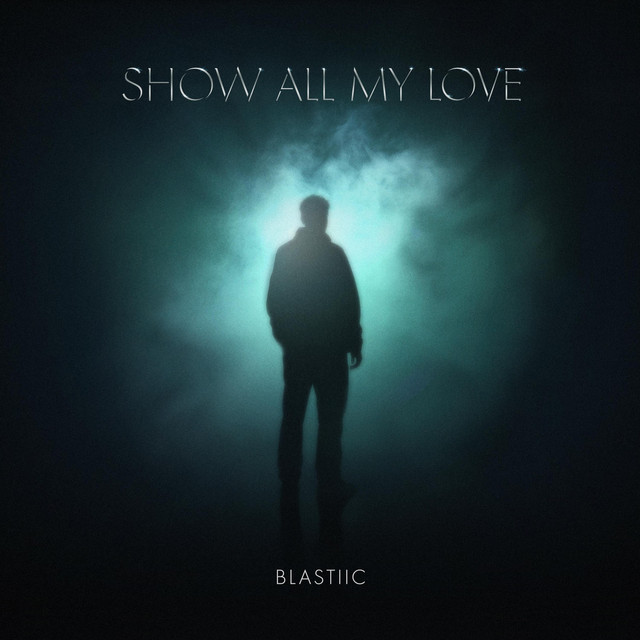

01 Selected music
BLASTIIC / RELEASES02 Radio / worldwide
CURATED & MIXED BY BLASTIICBLASTIIC
SELECTS.
Rolling grooves. Heavy basslines.
Between melody and the club.
WORLDWIDE SOUND / DRAG TO EXPLORE
SELECTS 013
03 Behind the sound
PRODUCER / POLANDBetween melody
and the club.
Blastiic is a Polish electronic music producer whose sound lives between melody and the club.
Blending emotional songwriting with house-driven grooves and darker electronic textures, he builds records around memorable melodies, powerful low end and carefully controlled space.
Rather than staying within a single genre, Blastiic moves between dance-pop and club music while maintaining a distinct, polished sound of his own.
04 Contact
BOOKING & COLLABORATIONS